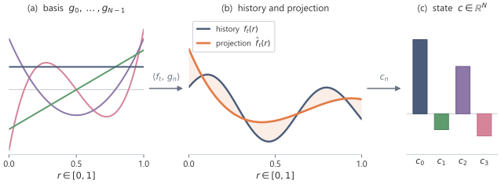
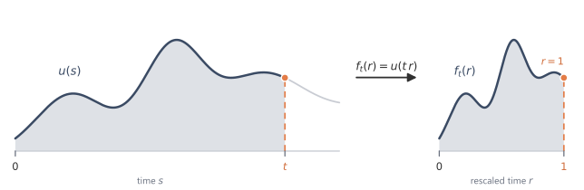

A fixed state cannot be a stored copy of the past. It must choose which summaries of the past to keep. One principled choice is to represent the history by projection coefficients in a polynomial basis. The remaining obstruction is online computation: those coefficients are useful only if they can be updated as new input arrives, without recomputing an integral over the whole history.
7.1 A fixed state is not a stored history
A sequence can be long, but the state has fixed dimension:
\[
x_k\in\R^N.
\]
The state cannot store the whole input history
\[
u_0,u_1,\dots,u_k
\]
as a list. It can only store \(N\) numbers derived from that history.
For the linear state space models considered here, compression into a fixed-dimensional state constrains what the model can represent. Two histories that produce the same state cannot be distinguished by the model from that time onward. Future outputs depend on the past only through the state.
The state update and the interpretation of the state must be chosen together.
An arbitrary state matrix gives an arbitrary memory. Some modes may decay too quickly. Some may preserve information without separating different parts of the past. Some may separate histories in exact arithmetic but lose that separation to rounding error. A useful state should spend its \(N\) coordinates on complementary summaries of the input history.
7.2 Slow decay is not enough
The simplest one-coordinate memory is a single decaying mode:
\[
x'(t)=ax(t)+bu(t),
\qquad
a<0.
\]
With zero initial state,
\[
x(t)=\int_0^t e^{a(t-s)}bu(s)\,\dd s.
\]
The state is an exponentially weighted average of the past. Making \(a\) closer to zero makes the memory longer, because the exponential decays more slowly.
But longer memory is not the same as richer memory. The state is still one number. It cannot distinguish two histories that have the same exponentially weighted average.
Adding more modes gives more summaries:
\[
x(t)\in\R^N.
\]
Yet these summaries should not be arbitrary. If several coordinates measure nearly the same feature of the history, state dimension is wasted. If all modes decay at similar rates, they cover similar timescales. If the state only stores coarse averages, recent detail is lost. If it only stores recent detail, distant structure is lost.
A good memory should describe the shape of the history at several resolutions, rather than spending all of its coordinates on the same kind of summary.
7.3 Approximating the history by projection
To control which summaries the \(N\) coordinates carry, treat the history itself as the object to be approximated. In continuous time, the past input up to time \(t\) is a function:
\[
u|_{[0,t]}.
\]
A finite-dimensional state cannot store this function exactly. It can store an approximation.
Function approximation gives a concrete interpretation to the state. Choose basis functions
The state is therefore the coordinate vector of an approximation to the input history.
What remains is to pin down which coefficients to use. To define the best approximation, an inner product is needed. On \([0,1]\), the standard inner product is
\[
c_n=\inner{f}{\phi_n}
=
\int_0^1 f(r)\phi_n(r)\,\dd r.
\]
Orthogonality matters because each coefficient measures a new direction in function space. The coefficient \(c_0\) measures the component of \(f\) in the direction \(\phi_0\). The coefficient \(c_1\) measures the component in the direction \(\phi_1\), after removing what has already been measured by \(\phi_0\). Higher coefficients continue this process.
The first \(N\) coefficients give the best approximation to \(f\) inside
\[
\spanop\{\phi_0,\dots,\phi_{N-1}\}
\]
in squared error:
\[
\int_0^1 |f(r)-\widehat f(r)|^2\,\dd r.
\]
Orthonormality is what makes truncation optimal. The squared error of any candidate in the span splits into a sum over coefficient mismatches, so matching the first \(N\) coefficients and discarding the rest cannot be beaten within the span.
Keeping more coefficients lowers the reconstruction error. For a smooth decaying oscillation on \([0,1]\), projecting onto a basis of orthogonal polynomials of degree \(<N\) (the Legendre basis of Section 5) and reconstructing from the \(N\) coefficients gives a maximum pointwise error that falls as \(N\) grows.
N = 3: max error = 0.3381
N = 8: max error = 0.0013
Three coefficients (a degree-\(2\) fit) leave a visible residual. Eight track the curve to roughly a thousandth of its amplitude. A smooth history is described by a few coefficients. The state dimension \(N\) controls how fine that description is.

Figure 7.1. The state stores the coefficients of an approximation. (a) A finite basis \(\phi_0,\dots,\phi_{N-1}\), one colour per function. (b) The history \(f_t(r)\) (blue) and its projection \(\widehat f_t(r)\) onto that basis (orange). The shaded band is the approximation error. (c) The projection coefficients \(c=(c_0,\dots,c_{N-1})\), coloured to match their basis functions. These coefficients are the state that is kept, not the samples.
7.4 Moving the history to a fixed interval
Projection onto a finite basis is defined on a fixed interval, but the history is not. At time \(t\), the input history lies on \([0,t]\). At a larger time, it lies on a different interval. There are two ways to fit a growing history onto one fixed basis. A fixed-length window projects only the recent past and discards everything older; an input that falls off the back of the window leaves no trace in the state. Rescaling maps the whole interval \([0,t]\) onto \([0,1]\); the entire past remains represented, but the resolution becomes coarser as \(t\) grows. The rescaled construction forgets no time outright, but it summarises the distant past more coarsely than the recent past.
For \(0\le r\le 1\), define
\[
f_t(r)=u(tr).
\]
The point \(r=1\) corresponds to the present input \(u(t)\). The point \(r=0\) corresponds to the beginning of the history. Intermediate values of \(r\) represent relative position inside the history. The function \(f_t\) is the rescaled history.
The \(n\)th coefficient of the rescaled history is
As \(t\) changes, the state must change for two reasons. First, a new input value arrives at the present endpoint. Second, the whole history is rescaled, because the interval \([0,t]\) has grown. The state update must account for both effects.
A constant input isolates the second effect. Take \(u\equiv 1\). Then \(f_t(r)=u(tr)=1\) for every \(t\), so the rescaled history is the same function no matter how far the interval has grown. Every coefficient \(c_n(t)=\int_0^1 1\cdot\phi_n(r)\,\dd r\) is then fixed, and the state \(c(t)\) does not move as \(t\) increases. The rescaling has absorbed the growth of the interval, which is exactly what the second effect was meant to do.
A changing input then moves the state through the first coefficient. Reading \(c_0\) with \(\phi_0(r)=1\) and substituting \(s=tr\) gives
the running average of the input over the whole history. A constant input holds this average fixed, while any input whose level drifts pulls \(c_0(t)\) with it. The remaining coefficients then record how the input is distributed across the interval, beyond its average level.

Figure 7.2. The growing history on \([0,t]\) is rescaled to the fixed interval \([0,1]\) by \(f_t(r)=u(tr)\), with \(r=1\) the present.
7.5 A polynomial basis and its online dynamics
Projection coefficients can be defined for any orthonormal basis. The choice of basis fixes what the coefficients mean and how the state spends its coordinates. Polynomials are a natural basis for approximating smooth functions on an interval. Low-degree terms describe coarse structure. Higher-degree terms describe finer variation.
The first coefficient can represent an average level. The next can represent a trend. Higher coefficients can represent curvature and more detailed changes across the history.
Orthogonality keeps these roles separate: each coefficient depends on its own basis function and not on the others. On an interval, the classical choice is the Legendre basis.1 The shifted Legendre basis on \([0,1]\) begins with
\[
\phi_0(r)=1,
\]
\[
\phi_1(r)=\sqrt{3}(2r-1),
\]
\[
\phi_2(r)=\sqrt{5}(6r^2-6r+1).
\]
The coefficient of \(\phi_0\) records the constant component of the rescaled history. The coefficient of \(\phi_1\) records the linear component. The coefficient of \(\phi_2\) records the quadratic component, and so on.
The state dimension \(N\) now has a concrete interpretation as the number of polynomial coefficients retained from the history.
The rescaling raises a cost objection. The coefficient formula
\[
c_n(t)=\int_0^1 u(tr)\phi_n(r)\,\dd r
\]
looks like it requires recomputing an integral over the whole history whenever \(t\) changes. That would not give an online state space model, one whose update at time \(t\) uses only the current state and the current input. The polynomial basis resolves the objection.
For the Legendre basis, these coefficients satisfy a closed differential equation. The coefficients can be updated directly from the current state and the current input. No stored list of past inputs is needed.
The resulting online coefficient rule is called the High-order Polynomial Projection Operator, or HiPPO.2 It turns polynomial approximation from a static description of memory into a state equation.
7.6 Notation
Symbol
Meaning
Type
\(u(t)\)
input signal
scalar function
\(f_t(r)\)
rescaled history \(u(tr)\)
function on \([0,1]\)
\(r\)
relative position in the history
\([0,1]\)
\(\phi_n\)
\(n\)th basis function
function on \([0,1]\)
\(c_n(t)\)
projection coefficient of \(f_t\)
scalar
\(c(t)\)
vector of first \(N\) coefficients
\(\R^N\)
\(N\)
number of retained coefficients
positive integer
Summary
A finite state is a compression of the input history. For linear state space models, different long histories can map to the same state, so the state coordinates must be chosen to preserve the summaries that matter for future outputs.
A single exponential mode stores one weighted average of the past. Projection gives a richer design: rescale the history to \([0,1]\), approximate it in an orthonormal polynomial basis, and store the first \(N\) coefficients. The state dimension then controls the number of retained coefficients. HiPPO starts from this projection view and asks for an online differential equation for those coefficients.
Exercises
A single decaying mode with rate \(a<0\) stores the exponentially weighted average \(\int_0^t e^{a(t-s)}u(s)\,\dd s\) of the history. Construct two distinct inputs on \([0,t]\) that produce the same value of this average at time \(t\), and explain why slowing the decay (taking \(a\) closer to \(0\)) does not let the single mode separate them. What feature of the history does a slow mode preserve, and which features does it discard?
TipSolution
The stored value is the single number \(I=\int_0^t e^{a(t-s)}u(s)\,\dd s\). Any two inputs that integrate against the weight \(e^{a(t-s)}\) to the same value collide. Take \(u\equiv 0\) and a \(v\) chosen so that \(\int_0^t e^{a(t-s)}v(s)\,\dd s=0\): for instance \(v(s)=e^{-a(t-s)}(s-t/2)\) on \([0,t]\), whose integral against the weight is \(\int_0^t (s-t/2)\,\dd s=0\). Then \(u\) and \(v\) are distinct but produce the same state, so the mode cannot tell them apart.
Slowing the decay changes the weight, not the dimension. For any fixed \(a<0\) the map \(u\mapsto I\) is a single linear functional, so its null space is infinite-dimensional; some non-zero input always integrates to zero. Taking \(a\) closer to \(0\) only flattens the weight towards a plain average over \([0,t]\), lengthening the window but still collapsing the history to one number.
A slow mode preserves a weighted total of the history, emphasising recent input through the factor \(e^{a(t-s)}\). It discards everything orthogonal to that one weight: the distribution of the input across the window, its oscillations, and any rearrangement of mass that leaves the weighted total fixed.
Let \(f(r)=r\) on \([0,1]\) and use the shifted Legendre basis \(\phi_0(r)=1\), \(\phi_1(r)=\sqrt 3(2r-1)\). Compute the projection coefficients \(c_0=\inner{f}{\phi_0}\) and \(c_1=\inner{f}{\phi_1}\) by hand, write the degree-\(1\) approximation \(\widehat f\), and verify that \(f-\widehat f\) is orthogonal to both \(\phi_0\) and \(\phi_1\).
TipSolution
The first coefficient is \[
c_0=\int_0^1 r\cdot 1\,\dd r=\tfrac12.
\] The second is \[
c_1=\int_0^1 r\,\sqrt3(2r-1)\,\dd r
=\sqrt3\int_0^1(2r^2-r)\,\dd r
=\sqrt3\Bigl(\tfrac23-\tfrac12\Bigr)
=\frac{\sqrt3}{6}.
\] The approximation is \[
\widehat f(r)=c_0\phi_0(r)+c_1\phi_1(r)
=\tfrac12+\frac{\sqrt3}{6}\,\sqrt3(2r-1)
=\tfrac12+\tfrac12(2r-1)=r.
\] So \(\widehat f=f\) and the residual is \(f-\widehat f=0\), which is trivially orthogonal to every function, including \(\phi_0\) and \(\phi_1\). The zero residual is expected because \(f(r)=r\) already lies in \(\spanop\{\phi_0,\phi_1\}\), the degree-\(\le 1\) polynomials, so its degree-\(1\) projection reproduces it exactly.
Take the smooth history \(u(r)=e^{-2r}\cos(2\pi r)\) on \([0,1]\) sampled at \(256\) points. Using legendre_project and legendre_reconstruct, compute the maximum reconstruction error for \(N=1,2,4,8,16,20,24,32\) and tabulate it against \(N\). At which \(N\) does the error stop falling, and how does that point relate to the number of oscillations the basis must resolve?
The error falls steeply once \(N\) passes the degree needed to bend the polynomial through the oscillation, then flattens at floating-point level near \(N=20\): past that point it no longer decreases but drifts between \(10^{-14}\) and \(10^{-15}\), limited by the conditioning of the fit rather than by approximation.
The history completes one full period of \(\cos(2\pi r)\) on \([0,1]\), so the basis must turn over twice. A few low-degree polynomials cannot follow that turn, which is why \(N=1,2,4\) leave large residuals; by \(N=8\) the basis resolves the single oscillation to a thousandth of the amplitude, and adding further coefficients buys only smooth-tail corrections until the floor is reached.
The state can summarise the past by decay or by projection. For a fixed state dimension \(N\), contrast a bank of \(N\) decaying modes with distinct rates against the \(N\) Legendre coefficients of the rescaled history: which construction ties a coordinate to a fixed timescale, and which ties a coordinate to a shape across the whole interval? Then replace the decay bank by the simplest one-dimensional summary: the average of the history. Describe two histories it cannot tell apart but whose Legendre coefficients differ.
TipSolution
In a bank of decaying modes, coordinate \(n\) is \(\int_0^t e^{a_n(t-s)}u(s)\,\dd s\), a weighted total whose weight \(e^{a_n(t-s)}\) has a length set by the rate \(a_n\). Each coordinate is tied to a fixed timescale: a fast rate emphasises the recent past, a slow rate spreads its weight further back. The bank covers several windows, but every coordinate still records a single weighted total over its window.
In the projection, coordinate \(n\) is \(\int_0^1 f_t(r)\phi_n(r)\,\dd r\), the component of the rescaled history along the degree-\(n\) polynomial \(\phi_n\). Here the coordinate is tied to a shape across the whole interval, not to a timescale: \(\phi_0\) measures the constant level, \(\phi_1\) the linear trend, \(\phi_2\) the curvature, and so on. The summary describes the form of the history at increasing resolution.
For the one-dimensional average summary, whose stored value is \(\tfrac1t\int_0^t u(s)\,\dd s\), two histories with the same average are indistinguishable. Compare a constant \(u\equiv 1\) on \([0,t]\) with a ramp \(u(s)=2s/t\): both have average \(1\), so the average summary returns the same value, yet the ramp has a non-zero linear component while the constant does not. The projection records this in \(c_1\), the coefficient of \(\phi_1\), and so distinguishes the two histories that the average collapses together.
The same contrast can be made for a finite bank of exponential summaries. The proof uses a finite-dimensional null-space argument: finitely many exponential summaries define finitely many linear functionals, so many histories share the same stored values.
Footnotes and references
The use of the Legendre basis on a finite interval rests on the classical theory of orthogonal polynomials (Szegő 1939).↩︎
The online coefficient dynamics are due to the High-order Polynomial Projection Operator (Gu et al. 2020).↩︎